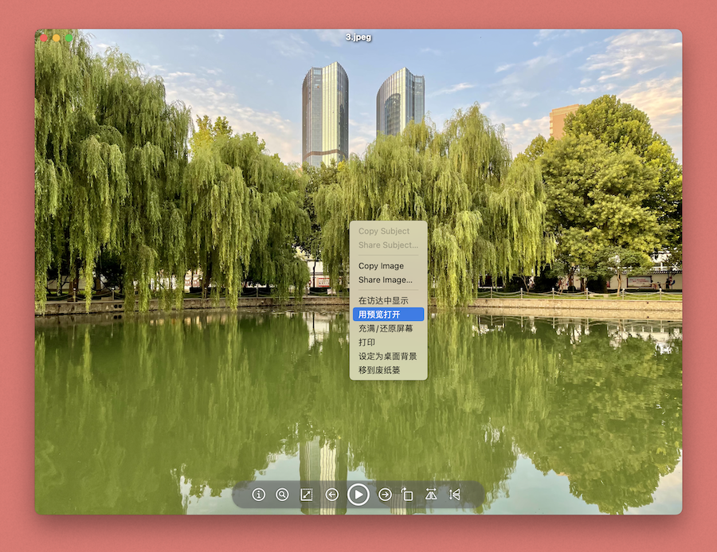

图片查看器

功能介绍
想象中的图片查看工具
简洁的图片查看工具，你可以通过控制面板来控制图片的各种显示方式

你可以直接打开App后选择图片，或者通过右键菜单选择App，拖入文件到App来显示图片

支持绝大多数图片格式
可以设置缩放、充满窗口、充满屏幕和实际尺寸显示
可以设置旋转、水平翻转和垂直翻转显示

自动识别图片中的内容，人物等对象或是文本

支持全屏播放模式
右键点击图片可以使用预览打开、在访达显示、拷贝图像、拷贝文件、打印、设置为桌面背景和移到废纸篓
